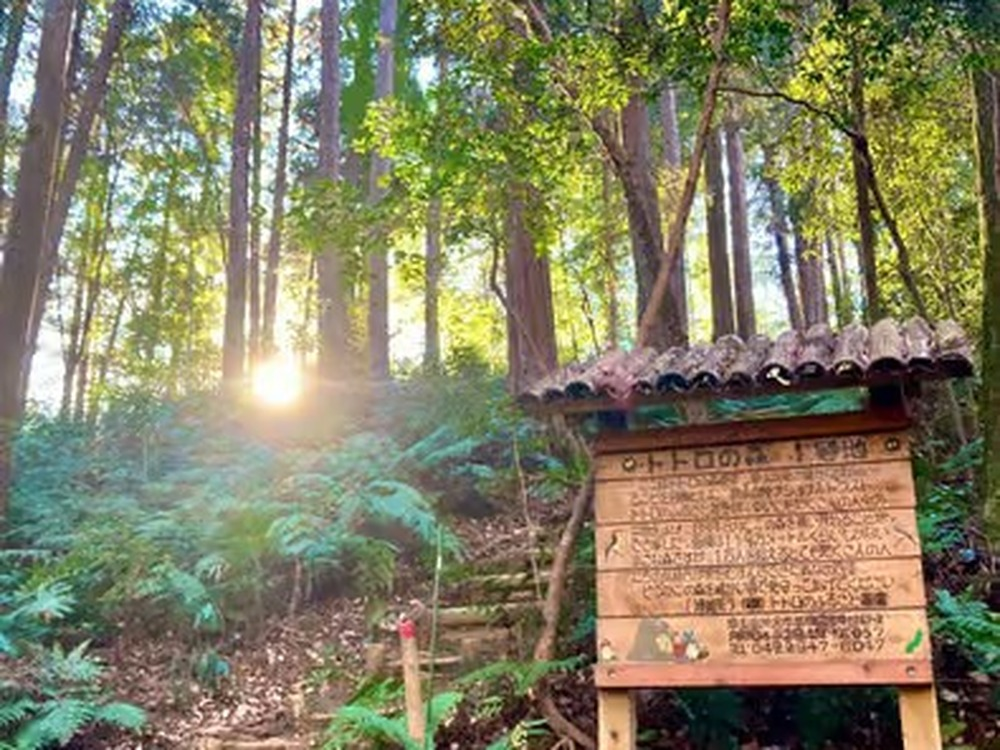

A Totoro Forest Day Trip from Tokyo Without a Car
You do not need a car to see the forest that is said to have inspired My Neighbor Totoro. A train ride, comfortable shoes and a plan for the day are enough.
The place is the Sayama Hills, on the border of Tokyo and Saitama. The "Totoro Forests" are not one park. They are small woodland parcels protected by a local trust, the Totoro no Furusato Foundation, which is why there is no main gate and no ticket office.
How to get there by train
From Ikebukuro, take the Seibu Ikebukuro Line to Nishi-Tokorozawa, then change to the Seibu Sayama Line for Seibu-Kyujo-mae Station. It takes about 45 to 55 minutes from Ikebukuro, or about an hour from Tokyo Station. The Sayama Line runs less often than the main line, so check the timetable before you leave.
What a day here looks like
This is the route I walk with guests: about 3 km in 3 to 5 hours.
- Totoro Forest No. 1, on soft forest paths (about an hour)
- A viewpoint over Lake Sayama
- Mikajima Hachiman Shrine, a small forest shrine
- A matcha break at Wada-en, a family-run Sayama tea shop (paid on site)
- The front gate of Kurosuke House, the Totoro Foundation's base
- A short ride back to Kotesashi or Higashi-Kurume Station

Good to know about Kurosuke House
You can photograph the house from its front gate any day. Going inside is a separate booking with the Totoro Foundation (cash, 500 yen), and the house is open only on some weekdays and Saturdays, so plan ahead. It is closed on Sundays and national holidays.
If you would rather not navigate
My small-group walk follows this route from Seibu-Kyujo-mae Station, with up to 3 guests. This is an independent nature and culture tour, not affiliated with Studio Ghibli. Details, meeting point and what to bring are on the tour page.
Walk it with a local
Totoro-Inspired Forest Walk & Lake Sayama Views: max 3 guests, rated 5.0 on GetYourGuide.
Check dates & book →Some links on this page are affiliate links: booking through them supports this site at no extra cost to you.